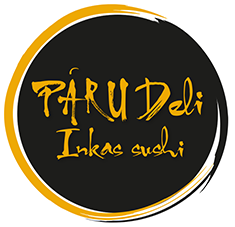
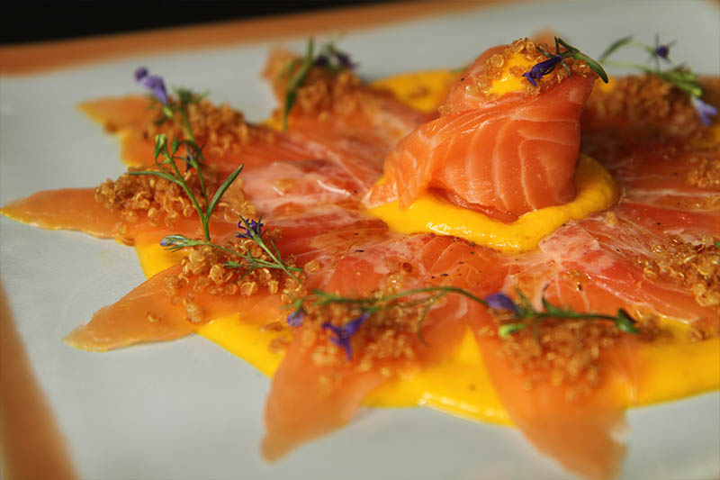

RESTAURANTES
TODA LA EXPERIENCIA DE PÁRU EN UN AMBIENTE SOFISTICADO Y CÁLIDO, DONDE DESTACAMOS EL COMPONENTE AMABLE Y CERCANO DE NUESTRA CUIDADA ATENCIÓN. DELIVERY Y TAKE AWAY DISPONIBLE
Jann Van Oordt, el reconocido chef peruano, introdujo hace ya algunos años la cocina fusión Peruano - Oriental en la Argentina , demostrando la interpretación, creatividad y exclusividad en cada uno de sus platos. Presentando una propuesta superadora con nuevas técnicas y sabores que mantienen su indiscutible estilo de cocina.
Un sutil balance entre los novedosos ingredientes andinos y el cuidado de la técnica japonesa
Tragos sofisticados, preparados con extrema paciencia y dedicación
Carnes sobresalientes y lo mejor del mar. Aderezados y preparados en dos estilos, peruano y japonés
Un sutil balance entre los novedosos ingredientes andinos y el cuidado de la técnica japonesa
TODA LA EXPERIENCIA DE PÁRU EN UN AMBIENTE SOFISTICADO Y CÁLIDO, DONDE DESTACAMOS EL COMPONENTE AMABLE Y CERCANO DE NUESTRA CUIDADA ATENCIÓN. DELIVERY Y TAKE AWAY DISPONIBLE

PÁRU ES UNA EXPERIENCIA SENSITIVA CENTRADA EN EL PALADAR, MUY DIFÍCIL DE EXPLICAR EN PALABRAS.
Nuestro menu ideado por Jann Van Oordt, está basado en tomar lo lo mejor de la cocina peruana
